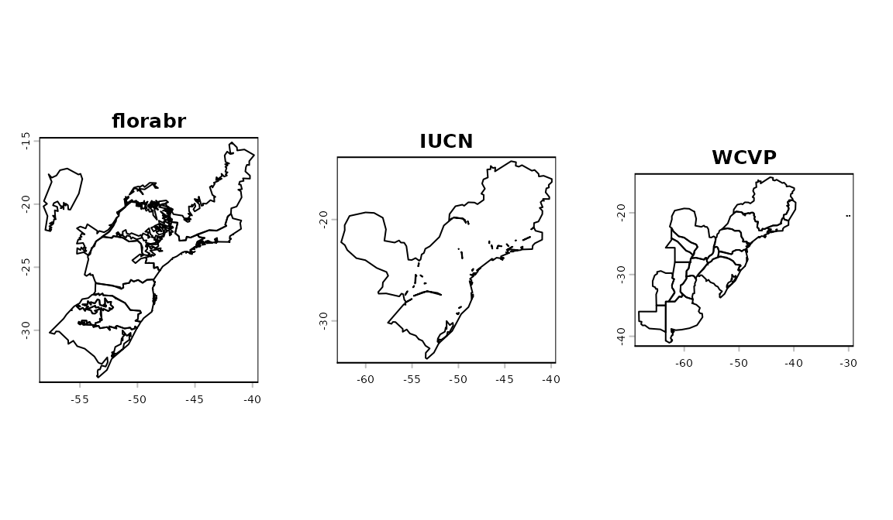
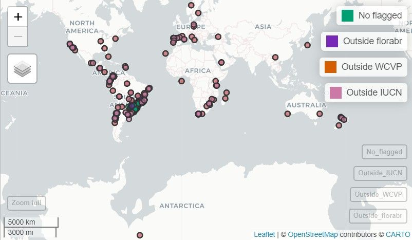
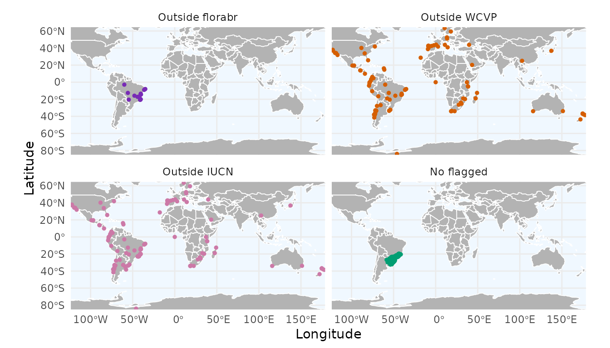
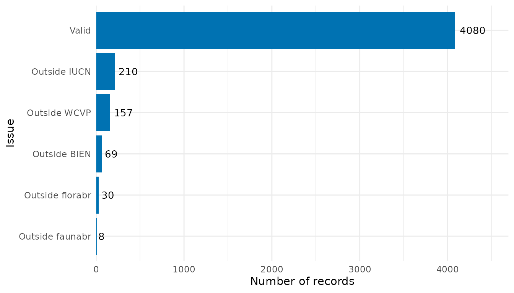

4. Flagging Records with Species List Information
Source:vignettes/flagging_records_species_list.Rmd
flagging_records_species_list.RmdIntroduction
One of the most robust ways to validate biodiversity data is to cross-reference occurrence records with expert-curated distribution datasets. If a species is known to occur only in specific regions (states, biomes, or countries) according to an official checklist (e.g., IUCN), records falling outside these areas can be flagged as potential errors or introductions.
RuHere streamlines this process by providing functions to:
- Download these official datasets directly into your R environment.
- Check availability of data for your species.
- Flag records that fall outside the known natural range.
Proposed workflow
The main idea of the package is to provide full control and
reproducibility over the record-removal process. This is achieved by
creating flag columns in the dataset, which are logical
variables indicating whether a record passed a given test
(TRUE) or failed it (FALSE). This approach
allows users to:
- Visuallize and inspect potentially erroneous records interactively before deciding whether to remove them.
- Define exceptions; that is, retain records that were flagged or remove records that were not flagged.
- Save flagged records to separate files, with information indicating why each record was excluded.
- Generate reports summarizing the cleaning process, making it more transparent and reproducible.
Overview of the functions:
-
florabr_here(): downloads the Flora e Funga do Brasil database. -
faunabr_here(): downloads the Taxonomic Catalog of the Brazilian Fauna. -
wcvp_here(): downloads the World Checklist of Vascular Plants (WCVP). -
iucn_here(): downloads species distribution information from the IUCN Red List. -
bien_here(): downloads range maps from the BIEN database. -
set_iucn_credentials(): stores your IUCN API key securely. -
available_datasets(): checks which datasets contain information for your target species. -
flag_florabr(): flags records based on Brazilian state/biome distributions. -
flag_faunabr(): flags animal records based on Brazilian distributions. -
flag_wcvp(): flags records based on global native ranges from WCVP. -
flag_iucn(): flags records based on IUCN distribution data (native, extant, etc.). -
flag_bien(): flags records based on BIEN range maps.
Getting ready
At this stage, you should have an occurrence dataset that has been
standardized using the format_columns() function and merged
with bind_here(). For additional details on this workflow,
see the vignette “1. Obtaining and preparing species occurrence
data”. Ideally, these records should also be standardized for
spatial consistency of country and state information. See the vignette
“2. Ensuring Spatial Consistency” for further
details.
To illustrate how the function works, we use the example occurrence dataset included in the package, which contains records for three species: the Paraná pine (Araucaria angustifolia), the azure jay (Cyanocorax caeruleus), and the yellow trumpet tree (Handroanthus albus).
# Load RuHere and terra
library(RuHere)
library(terra)
#> terra 1.8.93
# Loading the example data
data("occurrences", package = "RuHere")Downloading distribution datasets
Before flagging, you must download the reference datasets. These functions save the data in a structured format within your specified directory. Let’s create this directory:
Note: These downloads can be large and take time. You usually only need to run them once per project.
# Define a directory for datasets (using a temporary one for this example)
# In a real project, use a persistent path
dataset_dir <- file.path(tempdir(), "datasets")
dir.create(dataset_dir, showWarnings = FALSE)World Checklist of Vascular Plants (WCVP)
The World Checklist of Vascular Plants (WCVP) is a comprehensive, expert-reviewed list of scientifically described plant species, compiled over more than four decades from peer-reviewed literature, authoritative scientific databases, herbaria, and observational records.
Geographic distribution information in the WCVP follows the World Geographical Scheme for Recording Plant Distributions (WGSRPD), a system developed by the International Biodiversity Information Standards (TDWG) that divides the world into “botanical countries” and further subdivides large countries into states or provinces.
The wcvp_here() function downloads the full WCVP
dataset and the corresponding WGSRPD shapefile:
# Download WCVP
wcvp_here(data_dir = dataset_dir)
#> trying URL 'https://sftp.kew.org/pub/data-repositories/WCVP/wcvp.zip'
#> Content type 'application/zip' length 105093449 bytes (100.2 MB)
#> ==================================================
#> downloaded 100.2 MB
#>
#> trying URL 'https://zenodo.org/records/17455838/files/wgsrpd.gpkg?download=1'
#> Content type 'application/octet-stream' length 8581120 bytes (8.2 MB)
#> ==================================================
#> downloaded 8.2 MB
#>
#> Please don't forget to cite:
#>
#> Govaerts, R., Nic Lughadha, E. et al. The World Checklist of Vascular Plants, a continuously updated resource for exploring global
#> plant diversity. Sci Data, 8, 215 (2021). https://doi.org/10.1038/s41597-021-00997-6Botanical Information and Ecology Network (BIEN)
BIEN provides modeled range maps for over 90,000 species of vascular plants in the New World. These maps represent hypotheses of potential species distributions, generated from georeferenced occurrence data, associated environmental variables, and ecological niche modeling (Qian, 2020).
The bien_here() function downloads the range maps for
the specified species.
# Set species
spp <- unique(occurrences$species)
spp
#> [1] "Araucaria angustifolia" "Cyanocorax caeruleus" "Handroanthus serratifolius"
# Download BIEN maps for your species
bien_here(data_dir = dataset_dir, species = spp)
#> species range_available
#> <char> <lgcl>
#> 1: Araucaria angustifolia FALSE
#> 2: Cyanocorax caeruleus FALSE
#> 3: Handroanthus serratifolius TRUEThe function returns a data.frame indicating whether
range polygons for each species are available in BIEN. In this example,
distributional information is available only for the yellow trumpet tree
(Handroanthus serratifolius).
IUCN
Unfortunately, the spatial range maps generated by specialists and provided by the IUCN (https://www.iucnredlist.org/resources/spatial-data-download) are not available for automatic download. However, the IUCN does provide distributional information summarized by botanical countries following the WGSRPD scheme.
To use IUCN data, you first need to register for an API key at https://api.iucnredlist.org/users/sign_up. Once obtained, store the key securely in your R environment:
# Set your key (do this once)
set_iucn_credentials("YOUR_IUCN_KEY_HERE")We can now download the distributional information from the IUCN:
# Download data for specific species
iucn_here(data_dir = dataset_dir, species = spp)
#> trying URL 'https://zenodo.org/records/17455838/files/wgsrpd.gpkg?download=1'
#> Content type 'application/octet-stream' length 8581120 bytes (8.2 MB)
#> ==================================================
#> downloaded 8.2 MBBrazilian Flora and Funga (florabr)
Brazilian Flora and Funga (florabr) is the most comprehensive work to reliably document Brazilian plant, algae and fungi diversity. It involves the work of hundreds of taxonomists, integrating data from plant (including algae) and fungi collected in Brazil during the last two centuries.
Because florabr provides descriptive information based on expert knowledge on the endemism level, federal states, and biomes with confirmed occurrences of the species in Brazil, we can use this information to validate the records that fall within Brazil. First, we need to download the dataset using the florabr R package
Note: If you use this dataset, please remember to cite the package: Trindade WCF (2024). “florabr: An R package to explore and spatialize species distribution using Flora e Funga do Brasil.” Applications in Plant Sciences, e11616. doi:10.1002/aps3.11616 https://doi.org/10.1002/aps3.11616.
florabr_here(data_dir = dataset_dir, data_version = "latest")
#> Getting data from Flora e Funga do Brasil...
#> Data will be saved in /datasets/florabr
#>
#> Downloading version: 393.421
#>
#> Merging data. Please wait a moment...
#>
#> Data downloaded and merged successfully. Final data saved in datasets/florabr/393.421/CompleteBrazilianFlora.rds
#>
#> Please don't forget to cite:
#> Trindade WCF (2024). “florabr: An R package to explore and spatialize species distribution using Flora e Funga do
#> Brasil.” Applications in Plant Sciences, e11616. doi:10.1002/aps3.11616 <https://doi.org/10.1002/aps3.11616>
>>>>>>> Stashed changesTaxonomic Catalog of the Brazilian Fauna (faunabr)
The Taxonomic Catalog of the Brazilian Fauna (faunabr) is a sister project of florabr and represents the collaborative efforts of more than 500 zoologists, each specializing in different animal groups native to Brazil.
Similar to florabr, it provides expert-derived information on the Brazilian federal states and countries with confirmed species occurrences. Here, we download the dataset using the faunabr R package:
Note: If you use this dataset, please remember to cite the package: Trindade WCF (2025) faunabr: An R package to explore taxonomic data and map species distributions using the Catálogo Taxonômico da Fauna do Brasil. Zoologia 42: e25027. https://doi.org/10.1590/S1984-4689.v42.e25027.
faunabr_here(data_dir = dataset_dir)
#> Getting data from Taxonomic Catalog of the Brazilian Fauna ...
#> Downloading version: 1.45
#>
#> Merging data. Please wait a moment...
#>
#> Data will be saved in /datasets/faunabr
#> Data downloaded and merged successfully. Final data saved in datasets/faunabr/1.45/CompleteBrazilianFauna.gz
#> Please don't forget to cite:
#> Trindade WCF (2025) faunabr: An R package to explore taxonomic data and map species distributions using the Catálogo Taxonômico da Fauna do Brasil. Zoologia 42: e25027. <https://doi.org/10.1590/S1984-4689.v42.e25027>.Checking data availability
After downloading the datasets, you should have one folder for each data source:
fs::dir_tree(dataset_dir)
#> datasets
#> ├── bien
#> │ └── Handroanthus_serratifolius.gpkg
#> ├── faunabr
#> │ └── 1.43
#> │ └── CompleteBrazilianFauna.gz
#> ├── florabr
#> │ └── 393.420
#> │ └── CompleteBrazilianFlora.rds
#> ├── iucn
#> │ └── iucn_distribution.gz
#> ├── wcvp
#> │ └── wcvp.gz
#> └── wgsrpd
#> └── wgsrpd.gpkgYou can use the available_datasets() function to check
which databases provide distributional information for each species:
# Check availability for our species
avail <- available_datasets(data_dir = dataset_dir, species = spp)
avail
#> species datasets
#> 1 Araucaria angustifolia florabr;iucn;wcvp
#> 2 Cyanocorax caeruleus faunabr
#> 3 Handroanthus serratifolius bien;florabr;iucn;wcvpBy default, the function returns the datasets for which
distributional information is available for each species. If
return_distribution = TRUE, the function also returns a
list containing SpatVector objects representing the species
ranges:
# Get available ranges for species
avail_ranges <- available_datasets(data_dir = dataset_dir, species = spp,
return_distribution = TRUE)
# Plot ranges of Araucaria
ranges_araucaria <- avail_ranges$species_range$`Araucaria angustifolia`
par(mfrow = c(1, 3)) #Create grid
plot(ranges_araucaria$florabr$states_biomes, main = "florabr")
plot(ranges_araucaria$iucn, main = "IUCN")
plot(ranges_araucaria$wcvp, main = "WCVP")
dev.off() # Reset plotting layout
#> null device
#> 1These reference ranges are used by the subsequent functions to
validate occurrence records: any record falling outside the specified
ranges is flagged as invalid (FALSE).
Flagging with expert information
After downloading the datasets, the distributional information can be used to validate occurrence records. All validation functions include a buffer argument, which expands the distribution regions by a specified distance (20 km by default).
Using World Checklist of Vascular Plants (WCVP)
When filtering records using WCVP, you can specify whether to
consider only regions where the species is "native" (the
default) or also include locations where the species is
"introduced", "extinct", or marked as
"location_doubtful".
# Flag using WCVP-defined range
occ <- flag_wcvp(data_dir = dataset_dir, #Directory where dataset was saved
occ = occurrences)The function returns the original data.frame augmented
with a new column named wcvp_flag, in which all records
falling outside the WCVP-defined range are flagged as
FALSE. Because WCVP does not provide distributional
information for Cyanocorax caeruleus (an animal species), the
function returns NA values for this species.
# Number of records flagged (FALSE) for each species
table(occ$species, occ$wcvp_flag)
#>
#> FALSE TRUE
#> Araucaria angustifolia 111 813
#> Cyanocorax caeruleus 0 0
#> Handroanthus serratifolius 46 2075Using IUCN
When filtering records using IUCN, you can specify both the origin and the presence type.
The origin categories include "native" (default),
"introduced", "reintroduced",
"vagrant", "origin uncertain",
"assisted colonisation", and "all".
The available presence type categories include "extant",
"probably extant", "possibly extant",
"extinct", "possibly extinct",
"presence uncertain", and "all" (default).
# Flag using IUCN-defined range
occ <- flag_iucn(data_dir = dataset_dir, #Directory where dataset was saved
occ = occ)The function returns the original data.frame augmented
with a new column named iucn_flag, in which all records
falling outside the IUCN-defined range are flagged as
FALSE. Because IUCN does not provide distributional
information for Cyanocorax caeruleus, the function returns
NA values for this species.
# Number of records flagged (FALSE) for each species
table(occ$species, occ$iucn_flag)
#>
#> FALSE TRUE
#> Araucaria angustifolia 166 758
#> Cyanocorax caeruleus 0 0
#> Handroanthus serratifolius 44 2077Using Botanical Information and Ecology Network (BIEN)
If BIEN range maps are available, this function checks if records fall within the modeled distribution polygons.
# Flag using BIEN-defined range
occ <- flag_bien(data_dir = dataset_dir, #Directory where dataset was saved
occ = occ)
#> Checking the distribution from 1 of 3 species
#> Checking the distribution from 1 of 3 speciesThe function returns the original data.frame augmented
with a new column named bien_flag, in which all records
falling outside the BIEN-defined range are flagged as
FALSE. Here, BIEN provides distributional information only
for Handroanthus serratifolius:
# Number of records flagged (FALSE) for each species
table(occ$species, occ$bien_flag)
#>
#> FALSE TRUE
#> Araucaria angustifolia 0 0
#> Cyanocorax caeruleus 0 0
#> Handroanthus serratifolius 69 2052Using Brazilian Flora and Funga (florabr)
When flagging using florabr, you can specify the origin
("native" (default), "cultivated",
"naturalized"), as well as whether to validate occurrences
by federal states (by_state = TRUE, default) and/or biomes
(by_biome = TRUE, default). For species endemic to Brazil,
you can also choose to flag records occurring outside the country
(by_endemism = TRUE, default).
# Flag using florabr-defined range
occ <- flag_florabr(data_dir = dataset_dir, #Directory where dataset was saved
occ = occ)The function returns the original data.frame augmented
with a new column named florabr_flag, in which all records
falling outside the florabr-defined range are flagged as
FALSE. Here, florabr does not provide distributional
information for Cyanocorax caeruleus:
# Number of records flagged (FALSE) for each species
table(occ$species, occ$florabr_flag)
#>
#> FALSE TRUE
#> Araucaria angustifolia 25 899
#> Cyanocorax caeruleus 0 0
#> Handroanthus serratifolius 5 2116Using Taxonomic Catalog of the Brazilian Fauna (faunabr)
When flagging records using faunabr, you can specify the
origin ("native", "cryptogenic", or
"exotic", default is NULL, meaning all origins
are considered), as well as whether to validate occurrences by federal
states (by_state = TRUE, default) and/or countries
(by_country= TRUE, default).
# Flag using faunabr-defined range
occ <- flag_faunabr(data_dir = dataset_dir, #Directory where dataset was saved
occ = occ)The function returns the original data.frame augmented
with a new column named faunabr_flag, in which all records
falling outside the faunabr-defined range are flagged as
FALSE. Here, fauna provides distributional information only
for Cyanocorax caeruleus:
# Number of records flagged (FALSE) for each species
table(occ$species, occ$faunabr_flag)
#>
#> FALSE TRUE
#> Araucaria angustifolia 0 0
#> Cyanocorax caeruleus 4 1031
#> Handroanthus serratifolius 0 0Map of occurrence flags
Once records have been flagged, it is highly recommended to visualize them to assess whether the flagging is accurate before proceeding with final record removal.
As explained in detail in the vignette 3. Flagging Records
Using Associated Information, RuHere provides two
options for mapping flagged records: an interactive option via
map_here(), which uses the mapview package,
and a static option via ggmap_here(), which uses
ggplot2. Let’s see the flagged record of the Paraná
Pine:
Note: In this vignette, the map generated with
map_here()is a static snapshot of the interactive map produced in RStudio.
# Interactive map with map_here()
map_here(occ, species = "Araucaria angustifolia", label = "record_id", cex = 4)
With ggmap_here(), we can also plot each flag in a
separate panel by setting facet_wrap = TRUE:
ggmap_here(occ, species = "Araucaria angustifolia", facet_wrap = TRUE)
Records that are flagged as FALSE by multiple expert
sources are strong candidates for removal. You can remove these flagged
records using remove_flagged() (for more details, see
vignette 3. Flagging Records Using Record
Information):
occ_cleaned <- remove_flagged(occ)Summarizing flags
As we did in the previous vignette (3. Flagging Records Using Record Information), we can create a bar plot summarizing the number of records flagged by each flagging function:
flag_summary <- summarize_flags(occ)The function returns a data.frame summarizing the number
of records per flag and a ggplot2 object displaying this
summary as a bar plot:
# Data.frame summarizing the number of records per flag
flag_summary$df_summary
#> Flag n
#> 2 Outside faunabr 4
#> 1 Outside florabr 30
#> 5 Outside BIEN 69
#> 3 Outside WCVP 157
#> 4 Outside IUCN 210
#> 6 Valid 4080
# Bar plot
flag_summary$plot_summary
In the final vignette (5. Reducing Sampling Bias), we show how to mitigate sampling bias by thinning records in geographic and environmental space.